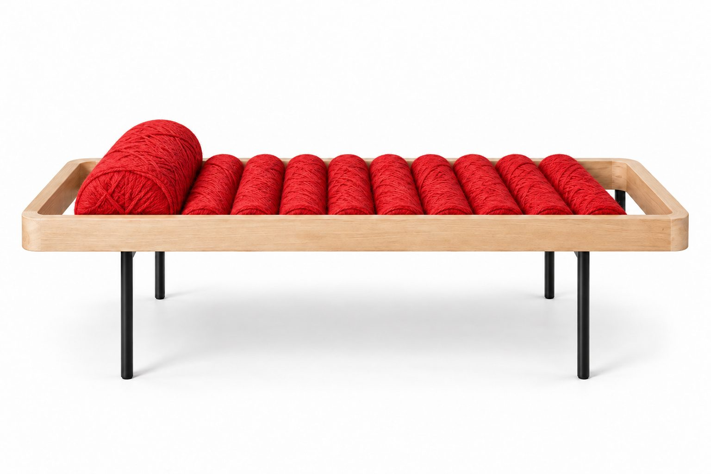
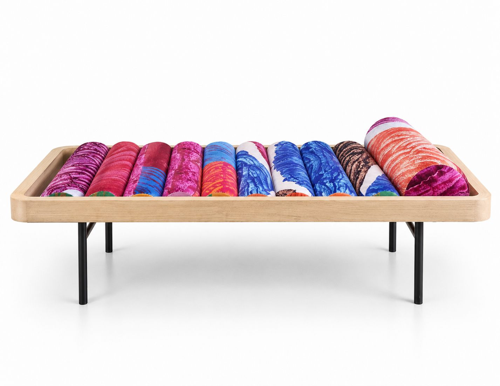
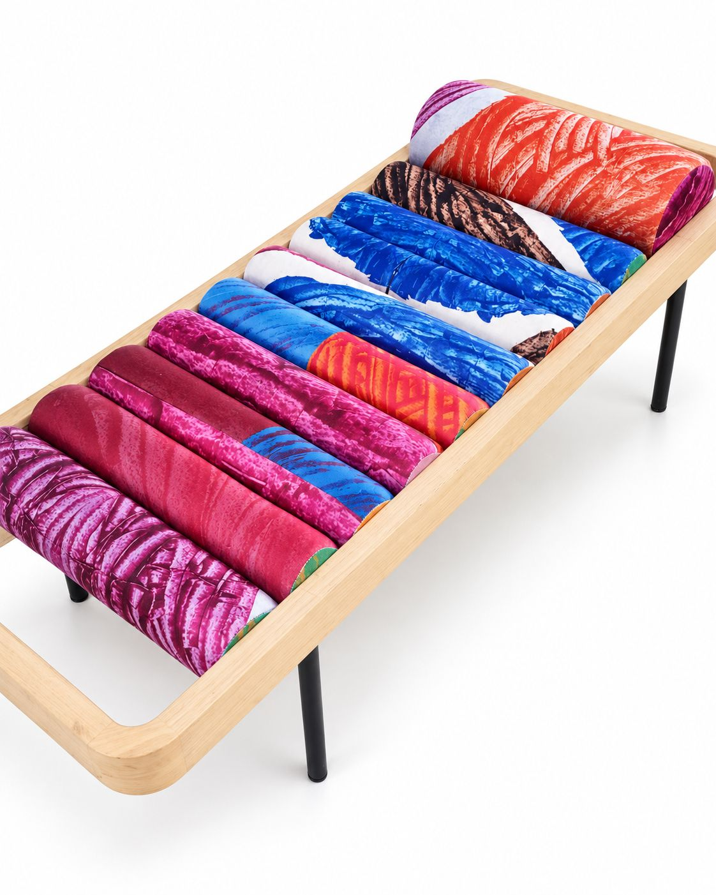
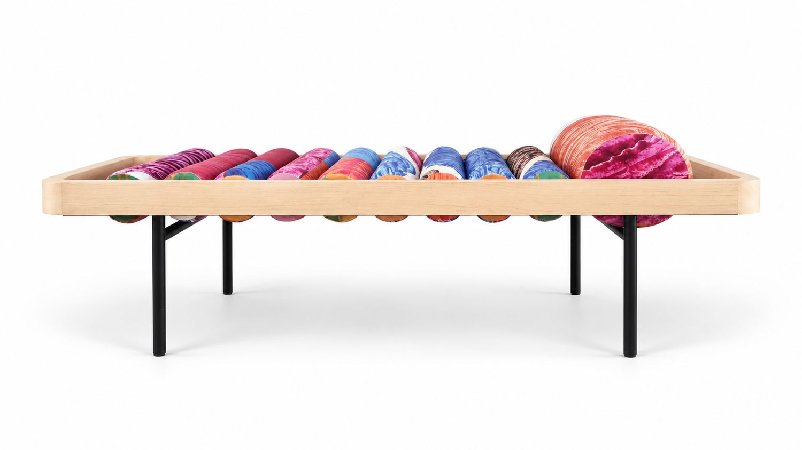
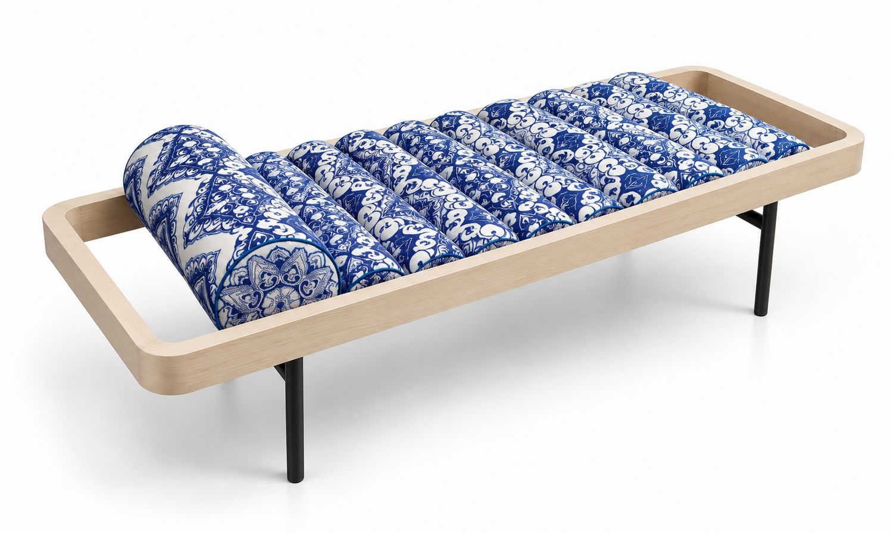
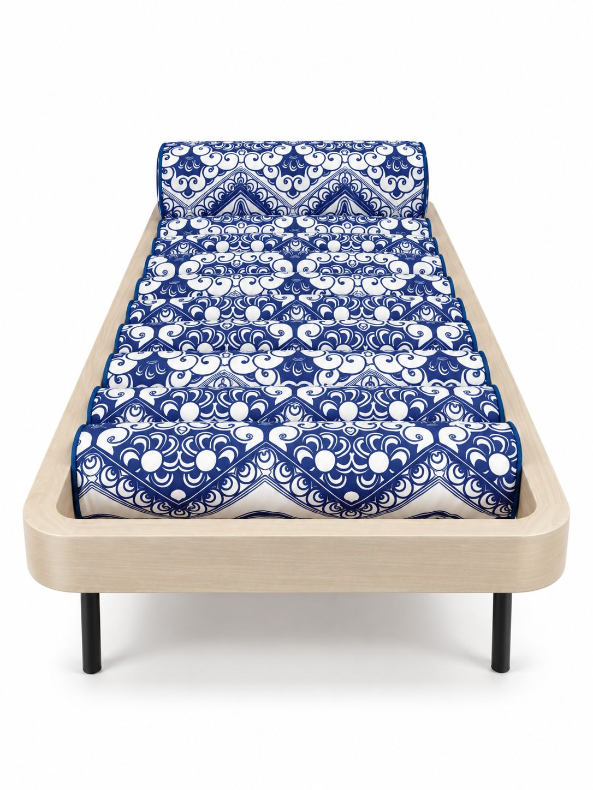

WORK 11 / 29
Thread Daybed
An understated daybed with an expressive textile language.
Year2018
StageLimited edition

DESIGN STORY
Thread Daybed contrasts a restrained timber frame with a vivid, textile-led seating surface. The layered threads introduce rhythm, colour and texture, while a variation featuring fabric inspired by Chinese porcelain offers a different cultural reading. The design treats upholstery as an expressive surface, bringing warmth and personality to a simple daybed silhouette.
PROJECT LINKS
- Deesawatwww.deesawat.com
PROJECT DETAILS
- Brand / Manufacturer
- Deesawat Industries Company Limited
SELECTED PRESENTATIONS
- 2023Chiangmai Design Week
- 2020The Living Art Gallery
- 2018Bangkok Design Week




